Day 07｜三台 PVE 如何組成叢集：Corosync、法定票數與 Ceph 共享儲存
對應文章：Day 07｜三台 PVE 如何組成叢集：Corosync、法定票數與 Ceph 共享儲存
建立前檢查
- Hostname 分別是
pve01、pve02、pve03，FQDN 位於lab.home。 - Corosync IP 分別為
10.77.80.11/24、10.77.80.12/24、10.77.80.13/24，不設定 Gateway。 - 節點間能經
10.77.80.0/24直接互通。
各節點執行檢查：
hostname --fqdn
ip -4 -br address
ip route
timedatectl
pvecm status
1. 建立 Cluster 前確認 Chrony
1.1 檢查外層 pve-l0
systemctl is-active chrony
chronyc tracking
chronyc sources -v
timedatectl
date -Is
1.2 分別檢查 pve01、pve02、pve03
systemctl is-active chrony
chronyc tracking
chronyc sources -v
timedatectl
date -Is
1.3 Chrony 未啟動處理
若未安裝或未啟動，執行：
apt update
apt install -y chrony
systemctl enable --now chrony
確認並停用其他 NTP Client：
systemctl is-active systemd-timesyncd
systemctl is-active chrony
systemctl disable --now systemd-timesyncd
systemctl restart chrony
1.4 時間強制校正
chronyc makestep
chronyc tracking
chronyc sources -v
date -Is
2. 複查 Corosync 網路
ping -c 3 10.77.80.11
ping -c 3 10.77.80.12
ping -c 3 10.77.80.13
3. 在 pve01 建立 Cluster
- 登入 pve01。
- 選
Datacenter→Cluster→Create Cluster。 - Cluster Name 填
iron-lab。 - Link 0 選
10.77.80.11。 - 按
Create。 - 選
Join Information，複製資訊。
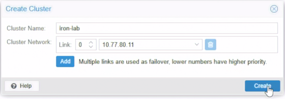
Shell 驗證：
pvecm status
pvecm nodes
systemctl status corosync --no-pager
4. 加入 pve02
- 登入 pve02 Web UI。
- 選
Datacenter→Cluster→Join Cluster。 - 貼上 Join Information，輸入密碼。
- Link 0 選
10.77.80.12。 - 按
Join。 - 回到 pve01 確認出現 pve02。
pvecm nodes
pvecm status
5. 加入 pve03
- 登入 pve03 Web UI。
- 重複加入步驟，Link 0 選
10.77.80.13。 - 按
Join。 - 回 pve01 確認三個 Node 皆出現。
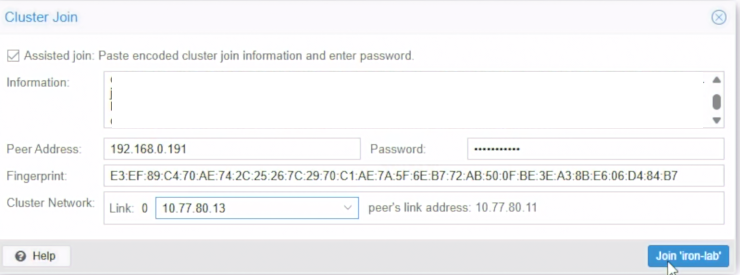
pvecm nodes
pvecm status
corosync-cfgtool -s
6. 關閉一個節點
在 L0 將 VM 103 Shutdown：
- pve03 變成離線。
- pve01 執行
pvecm status，確認 Total votes 2、Quorate Yes。
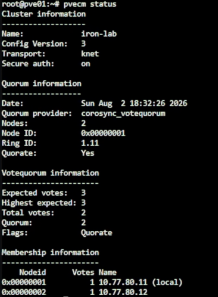
7. 再關閉一個節點
在 L0 將 VM 102 Shutdown：
- pve01 執行
pvecm status，確認 Total votes 1、Quorate No。
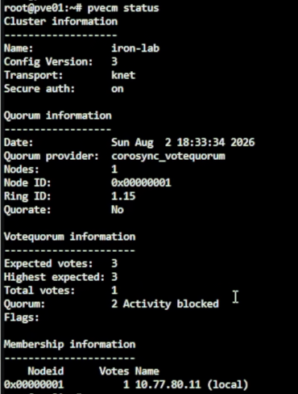
pvecm status
pvecm nodes
journalctl -u corosync -n 80 --no-pager
8. 恢復節點
- 在 L0 啟動 VM 102，等待開機。
- 確認恢復兩票。
- 啟動 VM 103。
- 確認三節點皆 Online、Total votes 回到 3。
9. 安裝 Ceph Squid 套件
三台節點執行：
pveceph install --repository no-subscription --version squid
ceph --version
確認為 Ceph 19.2 Squid 後輸入 y。
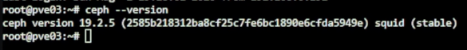
確認版本與 Repository：
apt policy ceph-common ceph-osd ceph-mon
排查衝突用（若有需要）：
grep -RhsnE 'enterprise\.proxmox|download\.proxmox|ceph-' \
/etc/apt/sources.list /etc/apt/sources.list.d 2>/dev/null
apt-cache policy ceph-common ceph-base ceph-mon ceph-osd
10. 初始化 Ceph Cluster
只在 pve01 執行：
pveceph init --network 10.77.70.0/24 --cluster-network 10.77.70.0/24
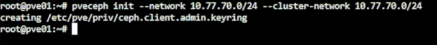
11. 建立 MON 與 MGR
三台節點各執行：
pveceph mon create
pve01、pve02 執行：
pveceph mgr create
Web UI 確認狀態：
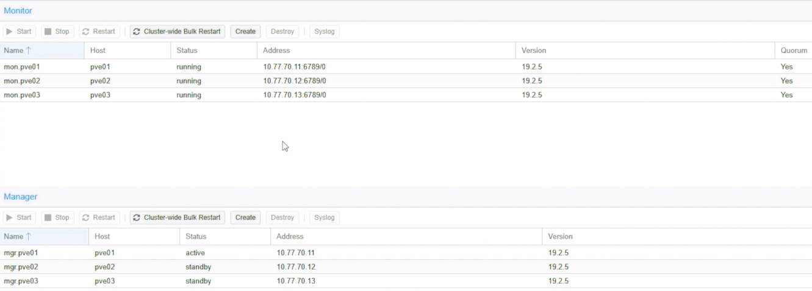
ceph -s
ceph mon dump
ceph mgr dump
12. 建立三個 OSD
各節點執行：
- 選節點 →
Ceph→OSD→Create: OSD。 - 選 40 GiB 空白磁碟。
- 按
Create。
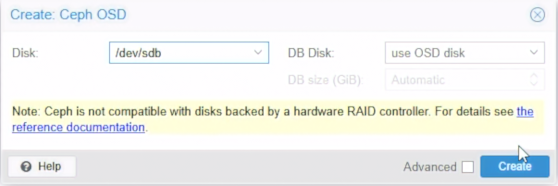
設定 Lab 記憶體限制：
ceph config set osd osd_memory_target 2147483648
ceph config get osd osd_memory_target
ceph -s
13. 建立 ceph-vm Pool
- 選
Ceph→Pools→Create。 - Name
ceph-vm，Size3，Min. Size2。 PG Autoscale Mode選on。- 按
Create。
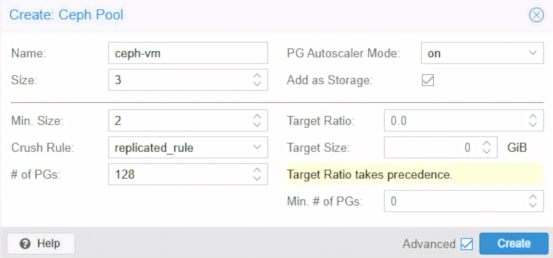
確認 Application：
ceph osd pool application get ceph-vm
若無 rbd 則執行：
ceph osd pool application enable ceph-vm rbd
ceph osd pool ls detail
pvesm status
ceph df
14. 建立 5GiB CephFS 共用 ISO
14.1 建立 MDS
pve01、pve02 執行：
- 選
Ceph→CephFS→Metadata Servers。 - 確認 Node，按
Create。
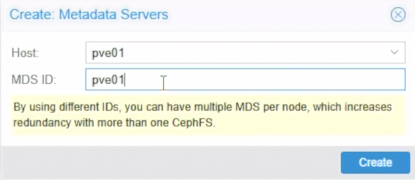
pveceph mds create
ceph mds stat
14.2 建立 CephFS 與加入 Storage
- 選
Ceph→CephFS→Create CephFS。 - Name
cephfs，PG Num32。 PG Autoscale Modeon。- 勾選
Add as Storage，按Create。
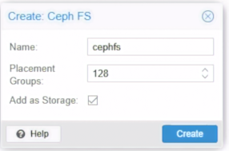
ceph fs ls
ceph fs status cephfs
ceph mds stat
ceph osd pool ls detail
pvesm status
若未自動加入 Storage，手動從 Datacenter → Storage 新增 CephFS。
14.3 確認 PG 與 Autoscaler
ceph osd pool get cephfs_data pg_num
ceph osd pool get cephfs_metadata pg_num
ceph osd pool get cephfs_metadata pg_num_min
ceph osd pool get cephfs_metadata pg_autoscale_bias
ceph osd pool get cephfs_data pg_autoscale_mode
ceph osd pool get cephfs_metadata pg_autoscale_mode
ceph osd pool autoscale-status
必要時開啟 Autoscale：
ceph osd pool set cephfs_data pg_autoscale_mode on
ceph osd pool set cephfs_metadata pg_autoscale_mode on
確認 Size：
ceph osd pool get cephfs_data size
ceph osd pool get cephfs_data min_size
ceph osd pool get cephfs_metadata size
ceph osd pool get cephfs_metadata min_size
必要時修正 Size：
ceph osd pool set cephfs_data size 3
ceph osd pool set cephfs_data min_size 2
ceph osd pool set cephfs_metadata size 3
ceph osd pool set cephfs_metadata min_size 2
14.4 限制根目錄為 5GiB (選用)
findmnt /mnt/pve/cephfs
df -h /mnt/pve/cephfs
apt update
apt install -y attr
setfattr -n ceph.quota.max_bytes -v 5368709120 /mnt/pve/cephfs
getfattr -n ceph.quota.max_bytes /mnt/pve/cephfs
df -h /mnt/pve/cephfs
14.5 上傳 ISO
- 選
cephfs→ISO Images。 - 上傳 ISO，確認三台節點均可讀取。
ceph fs status cephfs
ceph df
df -h /mnt/pve/cephfs
find /mnt/pve/cephfs/template/iso -maxdepth 1 -type f -printf '%f %s bytes\n'